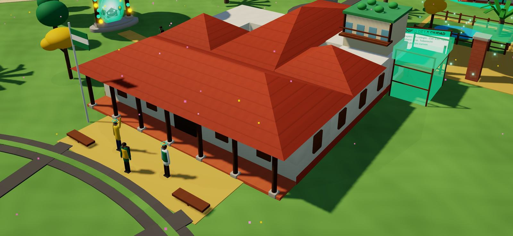
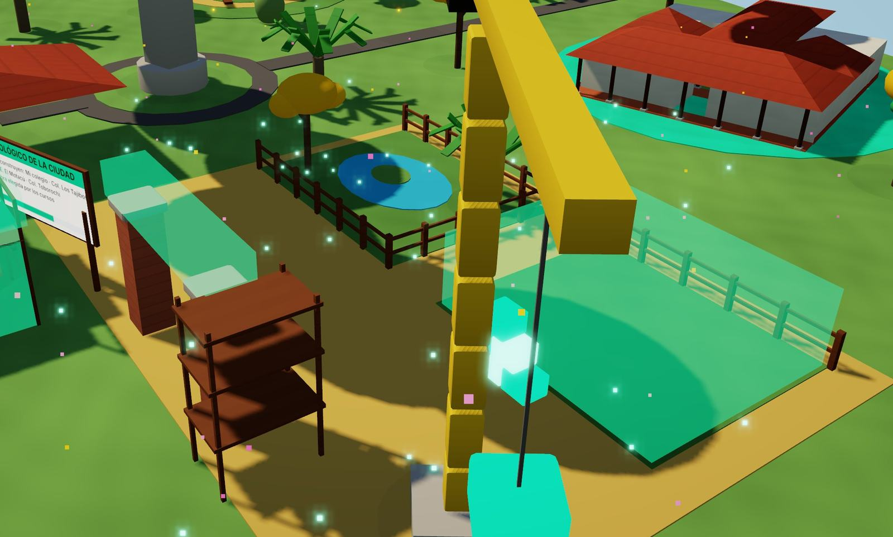
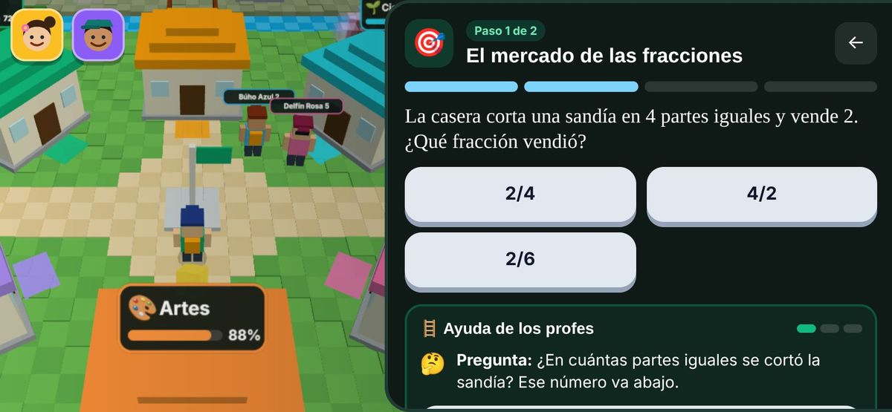
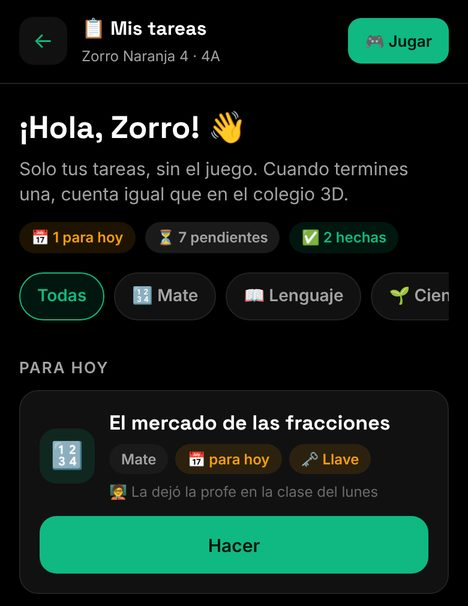
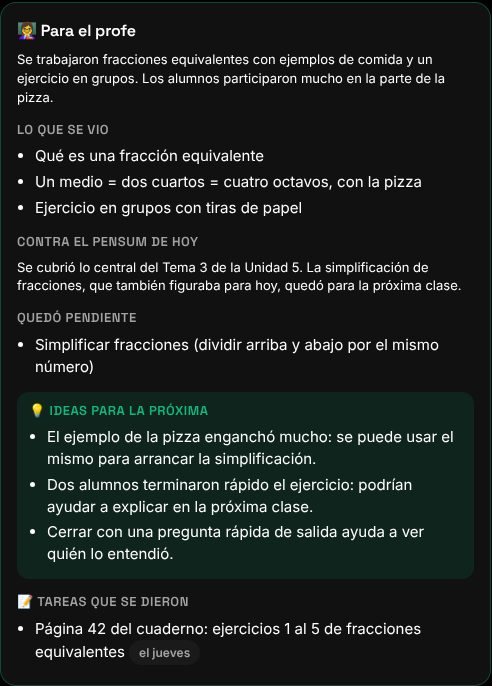
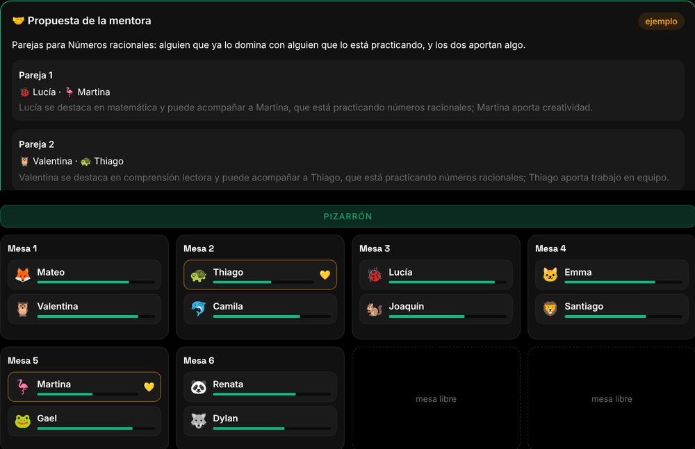

Hola, Profe · U.E. Nuevo Horizonte · 2.º de secundaria
Seguimos enseñando como hace 100 años.
Pizarrón, cuaderno y la misma clase para todos, aunque el mundo ya cambió. ¿Y si el cambio empieza en tu aula? Vos y tus chicos pueden ser los pioneros.
Tocá, deslizá o usá las flechas
La IA ya llegó. ¿Le damos la espalda o la ponemos a trabajar para nuestros chicos?
Hoy
La IA ya está en las casas y muchas veces hace la tarea por tus alumnos. No sabés qué hicieron ellos y qué copiaron.
Acá
El tutor guía con preguntas y pistas, sin dar la respuesta. La tarea se hace paso a paso y vos ves el proceso: el avance real y dónde pidieron ayuda.
Hoy la IA le hace la tarea al chico. Acá le enseña a hacerla.
Pensada para aprender, no para copiar. La IA trabaja de tu lado: te devuelve tiempo y te ayuda a ver a cada chico.
La IA ya leyó tus textos de 2.º de secundaria.
Con tus textos oficiales arma tu año: cada tema, en su trimestre y en su día.
Índices de los textos de aprendizaje 2025 del Ministerio. Borrador para que lo revises.
La visión
Una tablet por alumno, con todo adentro.
Que la alcaldía entregue a cada uno de tus alumnos una tablet con la plataforma y los textos oficiales del Ministerio, que ya son gratuitos.
Textos oficiales
Los del Ministerio, en la tablet y sin internet.
Menos gasto en casa
Una lista básica de útiles ronda Bs 1.000 al año, sin libros.*
Mochila liviana
Textos y cuadernos en un solo aparato.
* El Deber, 2025; cada libro, Bs 80 a 180. Cifras a verificar. Es una visión a construir con la alcaldía, no un acuerdo firmado.
Lo que viene
Un tutor en el bolsillo de cada alumno, las 24 horas.
“Profe, no me acuerdo qué dijo hoy sobre las fracciones…”
- Recuerda tu clase de hoy: se escucha y se resume.
- Le recuerda tareas, horarios y qué llevar.
- Le avisa lo que vos pediste decir en casa.
Un buscador o un chat cualquiera
Responde cualquier cosa. No sabe dónde estás.
Su tutor
Conoce tus textos y tu plan: sabe en qué tema va, qué dijiste en clase y qué le cuesta.
Ayuda a aprender y a ordenarse, no a copiar.

Acá no vale lo que tenés, sino lo que sabés.
Al aprender, tus alumnos ganan semillas de conocimiento, y tu curso las planta para hacer crecer su Santa Cruz: un zoológico, un parque. Tu colegio se encuentra con fiscales, rurales y particulares en un mundo cerrado y seguro, y compiten por mejora, no por plata.
Maqueta del mundo: el zoológico de la ciudad, en obra.
Bachilleres que salen sabiendo de verdad.
No es una app más: es llevar la tecnología a la escuela, frente a la pobreza y a la educación que no llega a todos.
Tus alumnos, cada uno a su ritmo y como aprende su cerebro, no como una manada.
Su app es agenda, textos, su tutor y un mundo para aprender jugando. El juego es una parte; el centro es el alumno.
Queremos bajar los aplazos de tu curso, y lo vamos a medir juntos.
Dos profes IA para cada uno de tus alumnos
- Explican a su manera, con ejemplos de acá y las veces que haga falta.
- Guían con preguntas: dan pistas, pero la respuesta la encuentra el alumno.
- Un mundo-juego: cada materia es un aula y las tareas son misiones.
- Modo directo para cuando hay apuro: solo las tareas, sin el juego.
Los nombres de los profes son provisionales: los chicos van a ayudar a elegirlos en los talleres.


Una mentora IA para vos
Escucha tu clase y arma el resumen contra tu pensum: qué se vio y qué quedó pendiente.
Arma tu cronograma día a día con el calendario oficial, y tu PDC listo para imprimir.
Te sugiere tareas según lo que pasó en tu clase de hoy.
El mapa de tu curso: cómo viene cada alumno, con propuestas para cada uno.
La IA propone. Vos decidís.
Lo que ganás: tiempo (cronograma, PDC y resúmenes salen como borrador para revisar) y ver a cada alumno.

Ver a cada alumno, no al promedio
Tu aula con cada alumno y cómo viene. Tocás uno y ves su ficha: fortalezas, temas y ritmo.
- La mentora te propone: parejas que se complementan, grupos por nivel o a quién acompañar esta semana.
- Vos aceptás, cambiás o descartás. Nada se aplica solo.
- A la mentora le llegan códigos, nunca nombres.

Lo que dice la evidencia
Tutor IA en Nigeria: 6 semanas de inglés, con docentes guiando.
Banco Mundial, 2025 · ensayo con sorteo
Enseñar según el nivel real de cada chico, no el del grado.
J-PAL, Teaching at the Right Level · 6 ensayos con sorteo en India
Tiempo de planificación de docentes que usaron IA con una guía, sin bajar la calidad.
EEF, Inglaterra, 2024 · ensayo con sorteo
Repartir computadoras sin uso guiado no mejoró matemática ni lenguaje.
BID, Perú 2012 · sorteo en 319 escuelas
DE = desviación estándar, la medida que usan estos estudios. Son resultados de otros países: en tu curso lo vamos a medir.
La propuesta para tu curso
Para tu escuela y las familias.
Durante 8 a 12 semanas.
Antes y después, comparado con otro curso parecido.
Sos co-diseñador: lo que no sirve, se cambia.
Cuidado de tus alumnos: sin nombres hacia la IA (cada uno es un código) · el audio de la clase no se guarda · todo con consentimiento de las familias y tuyo.
Qué medimos: lectura, matemática y aplazos, minutos de uso, el tiempo que ahorrás y qué opinan vos y tus alumnos.
Próximos pasos
- Probar el demo juntos, con tus textos.
- Carta de intención del colegio y permiso de la Dirección Distrital.
- Elegir tu curso del piloto y uno de comparación; revisar luz, internet y carga de tablets.
- Consentimientos, medición inicial y arranque.
Hablemos.
Nombre
Teléfono
ÑANDÉ Educación · Santa Cruz